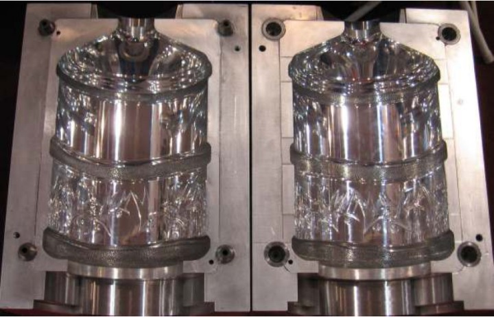
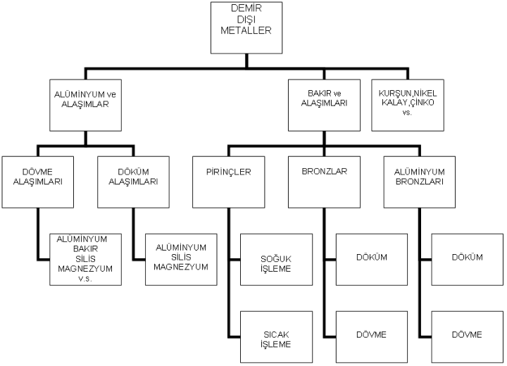
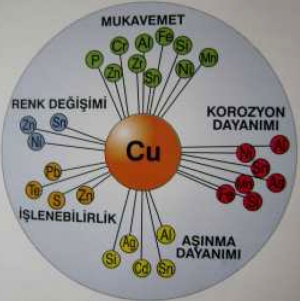

|
2.2.5.6 Kalýp Hamili Çelikler:
Kalýp hamillerinde St' si (çekme dayanýmý) garantili olmayan St 37, St 42 veya St 52 kullanmak zamanla problemlere yol açmaktadýr. Bu nedenle kalýp hamillerinde çekme dayanýmý maksimum 65 kg/mm2 olan 1.1730 çeliði daha çok tercih edilmektedir.
Çizelge 2.2.5.6.1 Kalýbýn parçalarý için tavsiye edilen çelikler
Kalýp Parçalarý |
Tavsiye Edilen Çelikler |
Vida |
1.2307,1.2379,1.8550 |
Silindir |
1.2344,1.2307,1.8550 |
Kafalar |
1.2344,1.2307,1.8550 |
Ýtici Plaka |
1.1730 |
Tutucu Plaka |
1. 2312 |
Kalýp Hamili |
1.1730, 1.2312 |
Baský plakasý |
1.2379,1.2842 |
Ýtici pimler |
1.2344 |

Resim 2.2.5.6.1 Plastik kalýp çeliðinden yapýlmýþ bir kalýp örneði
Çeþitli plastik kalýp çeliklerinin genel kullaným alanlarý
1.1730: Kalýp hamili olarak veya tabla olarak kullanýlýr. Platina veya demir gibi mekanik özelliklerin düþük olduðu malzemelerde genellikle yaþanýlan çekirdeðin oynamasý, çapak oluþumu, hamilde ezilme gibi sorunlar bu çelik ile aþýlabilir. Bu sorunlarý görerek kalýbý tek parça yapmak isteyenler için daha ekonomik bir çözümdür.
1.2311: Plastik ve basýnçlý döküm sanayinde kalýp hamili ve baðlantý parçalarý olarak kullanýlýr. 1.2312' e göre parlama özelliði daha iyidir. Yüzeyden merkeze inildikçe sertlikte düþüþ olduðundan yerine 1.2738 çeliði geliþtirilmiþtir.
1.2312: Ayna parlaklýðý gibi bir parlaklýk derecesinin þart olmadýðý kalýplarda 1.2738 yerine rahatlýkla kullanýlabilir. Daha yüksek sertliklerin iþlenmesi çok rahattýr. 30-33 RC sertlikte teslim edilir. Daha yüksek sertliklerin gerektirdiði durumlarda alevle sertleþtirme veya nitrasyon yapýlabilir. Desenlemeye uygun deðildir.
1.2738: Ayna parkalýðý elde edilebildiði 30-33 RC' ye sertleþtirilmiþ çeliktir. 1.2311 plastik kalýp çeliðinin yerini almýþtýr. Daha yüksek sertliðin gerekli olduðu durumlarda alevle sertleþtirilebilir veya nitrasyon yapýlabilir. Desenlemeye çok uygundur.
1.2316: Korozif etkisi olan PVC gibi plastiklerin kalýplarýnda, sertleþtirmeye gerek kalmadan kullanýlabilen bir çeliktir. Tamamýyla paslanmaz olmasý gereken kalýplarda çekirdek olarak 1.2083,hamil olarak 1.2316 iyi bir ikili oluþturur.
1.2767: Aþýndýrýcý etkiye sahip bakalit gibi plastiklerin kalýplarýnda kullanýlabilir. % 4 nikel içeriði sebebi ile serleþtirilebilirliði çok yüksektir. Parlaklýk kabiliyeti iyidir.
1.8550: Yine 30-33 RC' ye sertleþtirilmiþ, fevkalade nitrasyon sonuçlarýnýn alýnabildiði nitrasyon çeliðidir. Vida, kovan yapýmýnda ve plastik kalýplarýnda çok iyi sonuç verir. 0,1 mm' ye varan nitrasyon derinliði ile bilinir.
1.2083: Korozyon dayanýmý yüksek paslanmaz plastik kalýp çeliðidir. Harika sertliði ve parlatýlabilirliði vardýr. Korozyon etkisi olan PVC gibi plastiklerin kalýplarýnda kullanýlýr. Krom kaplamaya gerek yoktur. Çok iyi parlatýlabilir. Týbbi ve optik cihaz kalýplarýnda kullanýlýr.
2.1.5 Islah Çelikleri
Genel olarak ýslah çeliklerinden, yüksek dayaným ve süneklik birlikte istenir ve sertleþtirildikten sonra yüksek sýcaklýkta meneviþlenirler. . Islah çelikleri, ýslah iþlemi sonunda kazandýklarý üstün mekanik özelliklerinden dolayý çeþitli makine ve motor parçalarý, dövme parçalarý, çeþitli miller, muhtelif yaylar ve yay özelliði beklenen aksamlar, diþli miller ve akslar, kumanda ve tahrik parçalarýnda kullanýlýrlar. Kullanýlan belli baþlý ýslah grubu çelik malzeme numaralarý; Ç 4140, Ç 4135, Ç 5140, Ç 4130
2.1.6 Sementasyon Çelikleri
Sementasyon çelikleri, yüzeyde sert ve aþýnmaya dayanýklý, çekirdekte ise daha yumuþak ve tok özellik istendiði, deðiþken ve darbeli zorlamalara dayanýklý parçalarýn imalinde kullanýlan, düþük karbonlu, alaþýmsýz ve alaþýmlý olarak çeþitlendirilen çeliklerdir Sementasyon çelikleri; diþliler, miller, diþli miller, zincir diþliler, kýlavuz yataklarý, merdaneler vb. parçalarýn imalinde etkin olarak kullanýlýrlar. Belli baþlý türleri; Ç 8620, Ç 4120, Ç 5120 vb.
2.2 Çelik Standartlarý ve Simgeleri
Çelikleri belli soy, tür ve bölümlere ayýrarak tanýyabilmek için; sayý, harf gibi iþaretler kullanýmýna simgeleme denir. Baþlýca simgeleme standartlarý;
- SAE / AISI Standartlarý
- DIN Standartlarý
- ISO ve EN( EURONORM) Standartlarý
- AFNOR Standartlarý
- TSE Standartlarý
3. BAKIR VE BAKIR ALAÞIMLARI

Bakýr ve alaþýmlarýnýn günümüze kadar en önemli mühendislik malzemeleri olarak kalmalarýnýn sebebi, korozyon dayanýmlarýnýn, mükemmel elektrik ve ýsýl iletkenliðinin, cazip görünüþünün, sünekliðinin ve þekillendirme kolaylýðý sayesindedir. Gümüþten sonra en iyi elektrik iletkenliðine ve gümüþ ile altýn arasýna çok yüksek ýsý iletkenliðine sahiptir[3].
3.1 Pirinçler
Bakýrýn (Cu) çinko (Zn) ile deðiþik oranlarda birleþerek yapmýþ olduðu alaþýmlara pirinç adý verilir. Pirinç malzemelere, rengi sarý olduðu için ülkemizde "sarý" da denir. Pirinçlerin en önemli özellikleri atmosferik korozyona dirençli olmasý, sýcak ve soðuk þekillendirilmesi, derin çekilmeye, sýcak dövülmeye ve preslenmeye uygunluðu ve kolay lehimleme özelliðine sahip olmalýdýr[3].
3.2 Bronzlar
Bronzlar esas olarak kalay içeren bakýr esaslý alaþýmlardýr. Bakýrýn çinko içermeyen diðer alaþýmlarýna genel olarak bronz denilmekte ve çeþitleri ana alaþým elementleriyle belirtilmektedir. Geleneksel bronzlar bakýr-kalay alaþýmlarýdýr ve kalay bronzu ya da çoðu zaman fosforla deokside edildiklerinden, fosfor bronzu olarak adlandýrýlýrlar.
Endüstride kullanýlan önemli bronzlar kimyasal bileþimi, mekanik ve fiziksel özelliklerine göre kullaným alanlarýný þöyle sýralayabiliriz; yataklar, aþýnma plakalarý, cývatalar, pinyonlar, mafsallar, sürtünmeye dayanýklý diþliler, salyangoz diþlisi, sonsuz döner tabla ve muylu yataklarý, takým tezgah yataklarý, soðuk hadde yataklarýnda piston bilezikleri.
3.3 Sert Bakýr Alaþýmlarý
Sert bakýr alaþýmlarý çok geniþ kullaným alaný bulan alaþýmlardýr. Otomotiv, beyaz eþya, inþaat, kalýpçýlýk sektörlerinde sýklýkla kullanýlmaktadýr.
4. Alüminyum ve Alaþýmlarý
Alüminyum malzemeler alaþýmlarýna ve sertlik deðerlerine göre sýnýflandýrýlýr. Piyasada 5000 - 6000 ve 7000 serisi alüminyum malzemeler sýklýkla kullanýlýyor. Kullaným alanlarý mutfak eþyalarý, ev eþyalarý, bina kaplamalarý, elektrik iletkenleri, kimya ve gýda sanayiindeki kaplar, havacýlýkta, motor parça ve gövde dökümünde, kapý pencere yapýmýnda vb. yerlerde kullanýlýr.
Kullanýlan bazý alüminyum malzemeler; 5724, 5083, 6060, 7074,
|